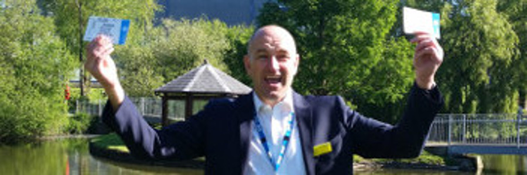

Blog
Wolverton Manor Garden Fete
Posted on 8th September 2016
Joan our social secretary arranged for us to have a stall at the Wolverton Manor Garden Fete held last weekend. We tried desperately to erect the gazebo on Friday and wish we had had a camera handy. The rain fell down and we were soaked to our undies but did manage to get it set up.
Saturday was fine and after setting up the stall did very well.
The stall was called everyone a winner, very simple with lots of small gifts and prizes and we did very well. Overnight the wind and rain blew so hard our gazebo landed upside down but thankfully intact which was better than most on the site.
Sunday was windy but again we did very well and had many people coming up to us and talking about their experiences so our networking was brilliant.
We cleared £210 and must say a big thank you to Shelly, Claire, Anne and Shirley for all their hard work.

IOW Festival Tickets Winner
Posted on 23rd June 2016
We were very lucky once again to have a pair of Isle of Wight Festival tickets donated to the IWKPA, as the star prize in our latest fundraising raffle.
We're delighted to annouce that the winner is Mark Isaacson and we hope that he had a great time at the Festival.
Thank you to everyone who bought tickets and helped us raise important funds to continue our work in supporting local people on the Island.
Holidays
Posted on 22nd March 2016
My husband Alex has been on HD dialysis for 4 years and for nearly 2 years has been using the NX stage system at home. Having dialysis at home does give us a more flexible lifestyle and more confidence to manage our new way of life. In 2014 we decided to travel to Spain for a holiday. The Nx stage system can be transported for holidays, but we decided to arrange for Alex to have his treatment at the Hospital in Torromolinos. We contacted Freedom Travel and they were very helpful and made all the arrangements. We had to arrange to have a blood test for Hepatitis and HIV and swabs for MRSA about a month before travel and the results forwarded to Freedom Travel. We then received an introduction letter to the dialysis unit at Torromolinos and we just turned up at the time and date as arranged. We just had to take our passport and EH1C card. We had the early morning session and Alex had a taxi from the hotel to the unit and they arranged a taxi back at lunch time.
The treatment he received was excellent. The staff caring and efficient, although only a few had any English Alex had no problems with communication. A Doctor visited the unit daily. We went to the same unit last November and they remembered him and hope to see him again next year.
As Spain was such a success with went to Tenerife last February and now there will be no stopping us with our travels. Going abroad is obviously not as simple as it used to be prior to dialysis it just takes a bit longer to arrange but well worth it when you are relaxing in the sun with a nice glass of wine. In Spain we stayed in Benalmedina and the hotel had a bus stop outside and a lift from the foyer down to the beach so it was ideal for us as Alex doesn't walk too far.
Freedom have a list of several holiday destinations that take the EH1C card and others where you have to pay.
Any help we can give please get in touch with us via the IWKPA and Happy Holidays.
Joan and Alex Bailey
Contact Us
Ann Daly
01983 611671
iwkpacontact@gmail.com